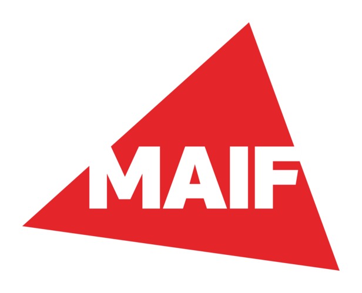
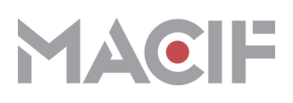
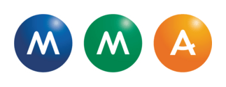

Agréments assurances
Un dégât des eaux ? On parle à votre assureur.
Recherche de fuite, réparation, séchage : nous intervenons sur le sinistre et traitons directement le dossier avec votre compagnie. Golfe Services Plomberie est agréé par les principales assurances françaises — un seul interlocuteur, du premier appel jusqu'à la prise en charge.



Sur présentation de votre contrat, nous constituons le dossier avec vous et coordonnons l'intervention avec l'expert.
Ce que nous réglons
La plomberie, de la fuite à la rénovation.
Fuite & dégât des eaux
Recherche de fuite sans tout casser, arrêt des dégâts, réparation, séchage. En cas de sinistre, nous montons le dossier et traitons avec votre assureur.
Débouchage & canalisation
WC, éviers, douches, colonnes bouchées. On débouche, on cure, on identifie la cause — pour que ça ne recommence pas la semaine suivante.
Chauffe-eau & sanitaire
Ballon en panne, plus d'eau chaude, robinetterie qui fuit, WC ou douche à remplacer. Dépannage rapide, remplacement propre, aux normes.
Rénovation & installation
Salle de bains, réseau d'eau, mise aux normes. On conçoit, on installe, on finit le travail — sans laisser de chantier derrière soi.
Notre terrain — de Hyères à Cannes
Votre commune est-elle chez nous ?
Le littoral que nous couvrons, du golfe de Saint-Tropez à l'Estérel, posé en maquette. Choisissez votre commune : sa balise s'allume et la distance s'affiche.
Notre secteur
- Golfe de Saint-Tropez littoral
Choisissez votre commune :
De Hyères au golfe de Saint-Tropez jusqu'à Cannes : choisissez votre commune pour voir qu'elle est dans notre zone.
Contour arrondi autour des communes desservies ; relief d'illustration. Distances à vol d'oiseau : ce n'est pas un temps de trajet.
Nous intervenons à Hyères, Le Lavandou, Cavalaire-sur-Mer, La Croix-Valmer, Saint-Tropez, Sainte-Maxime, Fréjus, Saint-Raphaël et Cannes — et sur les communes voisines du littoral varois. Un doute ? Appelez, on vous dit tout de suite.
La confiance
Des avis, quand ils sont vrais.
Le dépannage est un secteur où l'on promet beaucoup. Nous préférons le prouver : après chaque intervention, nous vous invitons à laisser un avis — de vrais retours, de vrais clients, sur notre fiche Google. Vous les verrez apparaître ici, au fur et à mesure.
Un seul artisan, responsable de bout en bout
La personne qui décroche est celle qui intervient. Pas de plateforme, pas de sous-traitance anonyme, pas de numéro qui renvoie ailleurs.
Agréé par les principales assurances
En cas de dégât des eaux, le dossier est traité directement avec votre compagnie.
Un devis clair avant d'intervenir
Nous en parlons de vive voix, puis nous remettons un devis avant de commencer. Vous savez ce qui va être fait, et pourquoi.
Bon à savoir
Avant de nous appeler.
Intervenez-vous en urgence, la nuit et le week-end ?
Oui — 24 h/24 et 7 j/7, jours fériés et ponts d'été compris. Un plombier vous répond et vous annonce un délai réaliste selon votre commune et l'heure.
Quelle zone couvrez-vous ?
Tout le littoral, de Hyères au golfe de Saint-Tropez jusqu'à Cannes : Le Lavandou, Cavalaire, La Croix-Valmer, Saint-Tropez, Sainte-Maxime, Fréjus, Saint-Raphaël. Un doute sur votre commune ? Un appel et vous saurez.
Êtes-vous agréé par les assurances ?
Oui. En cas de dégât des eaux, nous recherchons la fuite, réparons, et traitons directement le dossier avec votre compagnie. Nous sommes agréés par les principales assurances françaises.
Comment connaître le prix ?
Nous en parlons de vive voix au téléphone, puis nous remettons un devis clair avant de commencer. Vous validez, ensuite nous intervenons — sans surprise sur la facture.
Une fuite, une panne ? On arrive.
06 26 85 97 4324 h/24 · 7 j/7 · de Hyères à Cannes
Appeler maintenant